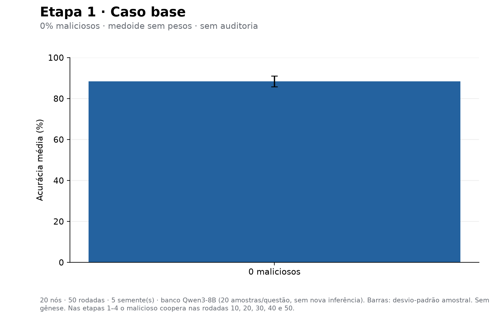
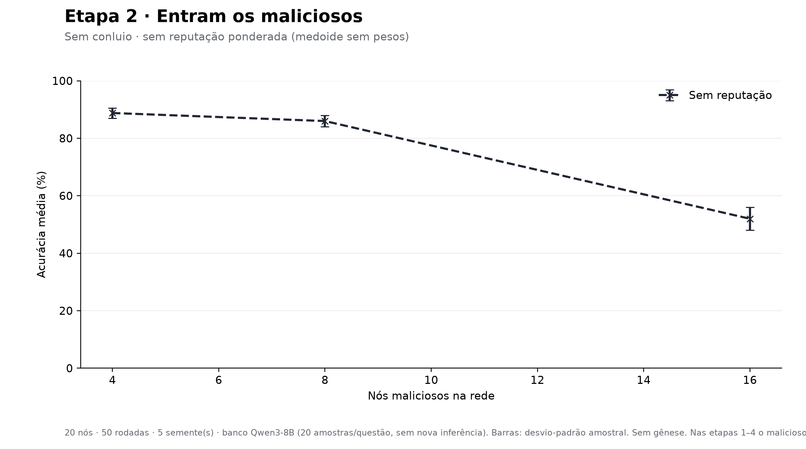
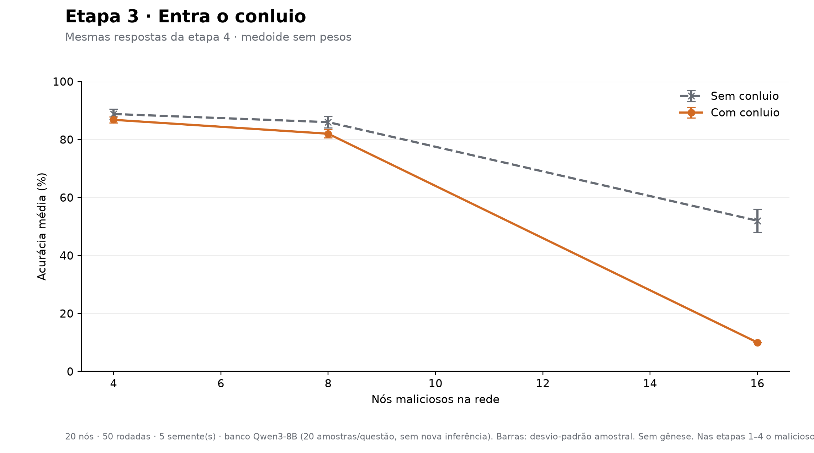
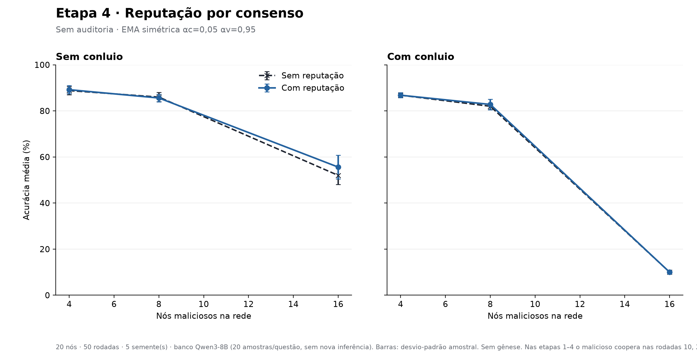
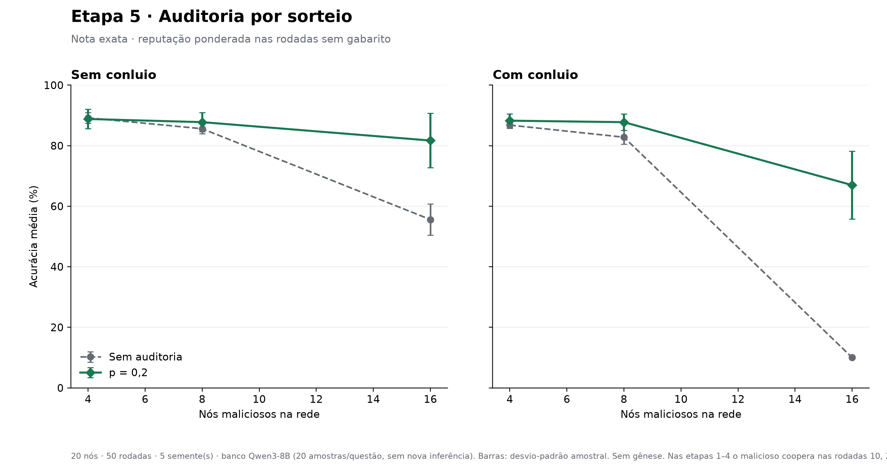
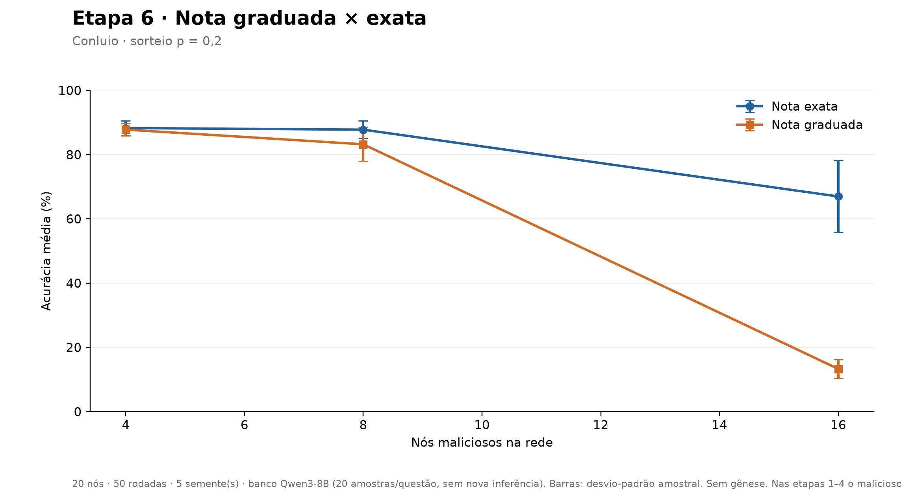
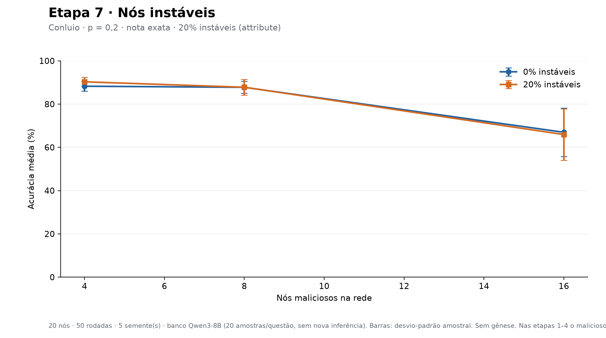
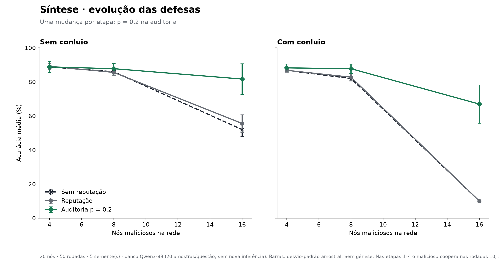
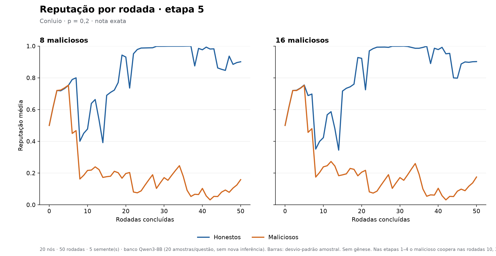

O que é esta série. Mesma história incremental (uma mudança por etapa). Honestos sorteiam uma das 20 respostas pré-geradas do Qwen3-8B NF4 no GSM8K (banco 840/1000 de acerto bruto); não há inferência nova nestas 100 execuções. 20 nós, 50 rodadas, sementes 0–4. Frações 0 / 20 / 40 / 80% (0, 4, 8 ou 16 maliciosos). Medoide, orquestrador dinâmico, grafo 4-regular, ruído relativo δ = 0,2, EMA (αc = 0,05, αv = 0,95), sem gênese. Nas etapas 1 a 4 o malicioso coopera nas rodadas 10, 20, 30, 40 e 50. Acurácia nas rodadas sem gabarito. Barras = desvio-padrão amostral das cinco sementes. Não substitui as 3.670 execuções Smol, o recorte Isabela 50 nós, nem geração ao vivo. Não misturar com Qwen3-0.6B nem com FP16.
Eixo horizontal: 4, 8 e 16 maliciosos em 20 nós. Arquivos em cenarios-incrementais-qwen8b/. Fonte: resultados/incremental/qwen3-8b-banco-n20s5/.
Etapa 1 · Caso base
Rede só com honestos, medoide sem pesos, sem auditoria. Teto deste banco no recorte: 88,4% ± 2,6.

Etapa 2 · Entram os maliciosos
Sem conluio e ainda sem reputação. Em 20% e 40% a acurácia permanece alta (88,8% e 86,0%). Em 80% cai para 52,0% ± 4,0.

Etapa 3 · Entra o conluio
Os maliciosos enviam o mesmo valor adulterado (999 + ruído). Em 80% (16 nós) a acurácia vai a 10,0% ± 0,0: maioria alinhada. Em 20% e 40% o medoide ainda acompanha os honestos (86,8% e 82,0%).

Etapa 4 · Reputação por consenso
A EMA entra, ainda sem auditoria efetiva. Com conluio em 80% a curva permanece em 10%: o peso sozinho não segura a maioria alinhada. Sem conluio, reputação e medoide quase coincidem.

Etapa 5 · Auditoria por sorteio
Gabarito em rodadas sorteadas com p = 0,2 (neste recorte não há p = 0,1). Com conluio em 80%, a acurácia sobe de 10% para 67,0% ± 11,2. Em 20% e 40% permanece alta (~88%).

Etapa 6 · Nota graduada × exata
Conluio e p = 0,2. A nota exata (etapa 5) em 80% fica em 67,0%. A graduada cai para 13,3% ± 2,9 no mesmo ponto. Em 20% e 40% as duas notas continuam altas.

Etapa 7 · Nós instáveis
20% instáveis (modo attribute: geram e podem dropar), conluio, p = 0,2, nota exata. Em 80% a média é 65,9% ± 11,9, próxima da etapa 5 sem instáveis (67,0% ± 11,2).

Síntese · evolução das defesas
Sem conluio, reputação e auditoria pouco se separam até 40%; a queda aparece em 80%. Com conluio, o salto visível é a auditoria p = 0,2 em 16 maliciosos. A reputação sem gabarito não tira a rede do colapso nessa maioria.

Reputação ao longo das rodadas
Etapa 5, conluio, p = 0,2, nota exata. Depois da cooperação inicial, a reputação média dos honestos sobe e a dos maliciosos cai, com 4 e com 16 maliciosos.

Números (média ± DP, %)
Acurácia nas rodadas sem gabarito. n = 5 sementes. Sem coluna 60% (este recorte não executa 0,6).
| Condição | 20% (4 nós) | 40% (8 nós) | 80% (16 nós) |
|---|---|---|---|
| E2 sem conluio, sem reputação | 88,8 ± 1,8 | 86,0 ± 2,0 | 52,0 ± 4,0 |
| E3 com conluio, sem reputação | 86,8 ± 1,1 | 82,0 ± 1,4 | 10,0 ± 0,0 |
| E4 reputação, com conluio | 86,8 ± 1,1 | 82,8 ± 2,3 | 10,0 ± 0,0 |
| E5 auditoria p = 0,2, com conluio | 88,3 ± 2,2 | 87,8 ± 2,7 | 67,0 ± 11,2 |
| E6 nota graduada, conluio, p = 0,2 | 87,8 ± 1,9 | 83,2 ± 5,3 | 13,3 ± 2,9 |
| E7 20% instáveis, conluio, p = 0,2 | 90,3 ± 2,1 | 87,8 ± 3,6 | 65,9 ± 11,9 |
Caso base (etapa 1): 88,4 ± 2,6 com 0% maliciosos. Banco: 840/1000 (84,0%) no Qwen3-8B NF4. Pasta: resultados/incremental/qwen3-8b-banco-n20s5/etapas.csv.